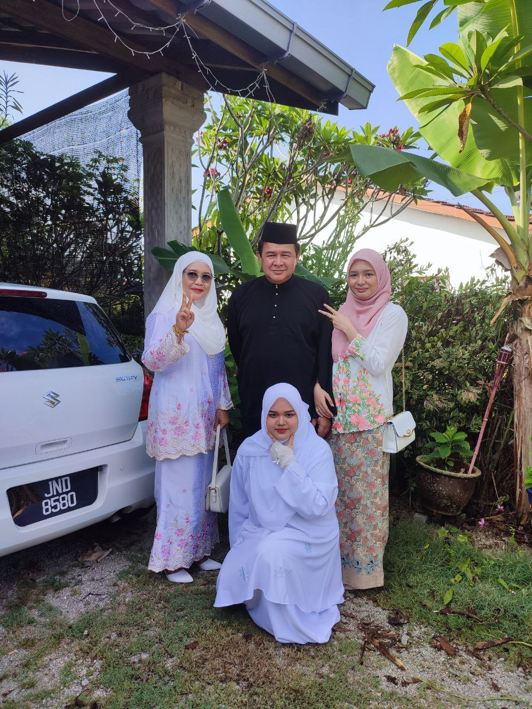

Let's know Mira's Parents

Mama, Abah, Kak Long & Me!
Starting from the left is my mother who I call Mama. Her name is Bunga Binti Said. This year she will be 56 years old already. My mother is a full time house wife.In the middle is my father who I call Abah. He is also 56 years old. His full name is Shaifuddin Bin Yusof. My father used to work as executive purchaser for rubber factory which is known as MARDEC but he already retired from it.
My mother is a photo album collector. She collect lot of photos during her youthful time, her teeneger life. I saw and heard of her story. She told me she was an netball athelete back then in high school. She also have the photo of her teams winning as much as they play. My mother also join lot of curriculum activity such as marching. My mother is a very active and popular girl when she was young. She is until now.
Meanwhile for my father. From what I heard he join a music band. Our house used to have drum set yet he sold it but we still have a bass guitar and acoustic guitar. My second brother play the acoustic guitar sometimes. Meanwhile my father also bought my sister a set of piano. I play it too sometimes. My father also an athelete. He is not that active as much as my mother but he play badminton, soccer and hockey.
How they get married? It was because my father fall in love with my mother on a first sight. They both from different school. My father went to Vocational College meanwhile my mother went to a famous highschool. Despite my mother keep being mad at my father and told him to go away. My father was so stubborn and bold. So he decide to propose my mother and my mother accept it since she's tired of making my father go away.
As you can see, I don't have much family photos that available with me because my family don't usually like taking picture and we are also not the type who keep it as a digital one. This photo is from Raya in 2023 if I'm not wrong.